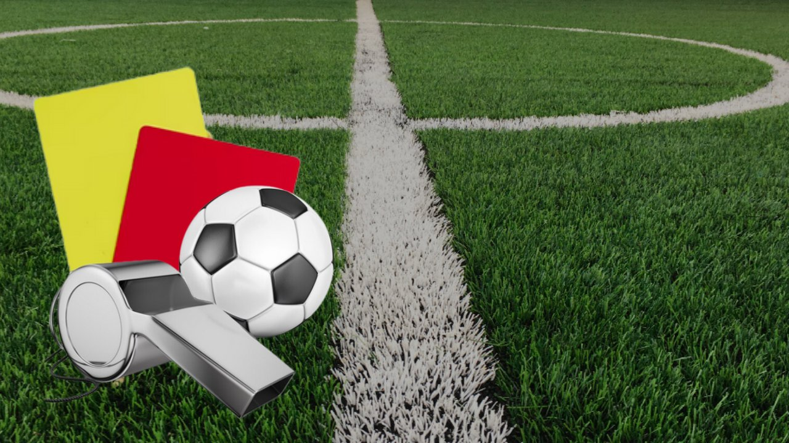

| --INICIO-- |
--Beneficios-- |
-- Calentamiento -- |
-- Futbol -- |
-- voleibol-- |
-- boxeo -- |
Futbol
El fútbol se define en primer lugar como un juego que incluye dos contrincantes y un árbitro con la capacidad de imponer justicia imparcial. Cada contrincante está compuesto por un equipo de 11 jugadores en campo de juego cada uno, con la opción de incluir jugadores suplentes en el transcurso del partido de fútbol.
El objetivo es hacer rodar un balón esférico con el fin de anotar un punto, cuya anotación es válida al cruzar la línea límite del arco contrario. Cada punto logrado es conocido como gol, por lo tanto el equipo que más goles sume en el transcurso de 90 minutos -tiempo neto de un partido- será el ganador.
Cada equipo deberá de incluir en su plantilla un arquero o portero, único jugador capaz de tocar el balón con las manos y con la tarea de impedir que el balón cruce su propio arco; un grupo de defensores; un grupo de volantes y finalmente un grupo de delanteros. Las tácticas de cada plantilla pueden variar en preferencia del director técnico a cargo del equipo de fútbol.

Principales reglas del fútbol
El fútbol tiene un reglamento que ha ido variando a lo largo de los años. En la actualidad, las reglas más relevantes son las siguientes:
Se enfrentan dos equipos de once jugadores cada uno, siendo uno de ellos el guardameta. Los jugadores pueden ser sustituidos a lo largo del partido, y el número máximo de sustituciones depende de la competición.
Los jugadores no pueden tocar el balón con las manos o brazos. El único que puede hacerlo es el guardameta, siempre y cuando esté en su área.
El equipo vencedor es el que ha introducido más veces el balón en la meta contraria. Es decir, el que marca más goles.
Los partidos duran 90 minutos, divididos en dos tiempos de 45 minutos, a los que se le añade el descuento. Entre los dos tiempos hay un descanso que no excede los 15 minutos. En las competiciones con eliminatorias, se añade una prórroga si el resultado final es el de empate. Si el empate sigue tras la prórroga, el vencedor se decide mediante lanzamientos de penales.
Los jugadores deben llevar un equipamiento básico que consiste en una camiseta, pantalones cortos, medias, canilleras y calzado. Los jugadores de cada equipo visten del mismo color, excepto el guardameta.
Se juega con un balón de entre 68 y 70 cm de circunferencia.
Los partidos cuentan con un árbitro que hace cumplir las reglas. Fuera de la cancha, cuenta con el apoyo de dos jueces de línea, de un cuarto árbitro y, en algunas competiciones, con una sala de videoarbitraje.
Los jugadores pueden ser amonestados con tarjetas. Si la infracción es leve, ven tarjeta amarilla. Si es grave o antideportiva, es roja, También se saca tarjeta roja si el jugador acumula dos amarillas en el mismo partido. Los jugadores con tarjeta roja no pueden seguir en el partido y abandonan la cancha.
Saque lateral. Una vez que el balón haya traspasado una línea lateral, se deberá proceder a tomar el balón con la mano para volver a ponerlo en juego.
Saque de meta. Una vez que el balón haya traspasado la línea frontal, habiendo sido tocada por última vez por un equipo en campo de juego rival, el arquero rival deberá poner el esférico en juego desde su arco.
Tiro de esquina. Una vez que el balón haya traspasado la línea frontal y haya sido tocado por última vez por un equipo en campo propio, se le concederá al rival reanudar el juego con un saque del balón desde el vértice correspondiente.
Tarjeta amarilla. Quedará a criterio del árbitro sancionar a un jugador con tarjeta amarilla al cometer un infracción un jugador.
Tarjeta roja. Un jugador verá la tarjeta roja al recibir dos tarjetas amarillas y deberá abandonar el campo de juego de inmediato. También se puede sancionar con tarjeta roja directa.

El campo de juego
El terreno de juego para practicar fútbol profesional deberá reunir ciertas condiciones establecidas por la autoridad deportiva conocida como FIFA (Federación Internacional de Fútbol Asociación). Estas condiciones son:
Tendrá que incluir césped natural o artificial de forma rectangular.
Medidas establecidas de largo, mínimo 90 metros, máximo 120 metros.
Medidas establecidas de ancho, mínimo 45 metros, máximo 90 metros.
Los arcos deberán medir hasta 2,44 metros, con 7,32 metros de separación entre un palo lateral y el otro.
Posición táctica de los jugadores
Guardameta, arquero o portero
El guardameta, también conocido como portero, arquero o golero, es el jugador cuyo principal objetivo es evitar que la pelota entre a su meta durante el juego, acto conocido como gol. El guardameta es el único jugador que puede tocar la pelota con las manos durante el juego activo, aunque solo dentro de su propia área. Cada equipo debe presentar un único guardameta en su alineación. En caso de que el jugador deba abandonar el terreno de juego por cualquier motivo, deberá ser sustituido por otro futbolista, ya sea uno que se encuentre jugando o un sustituto. Este tipo de jugadores deben llevar una vestimenta diferente a la de sus compañeros, sus rivales (incluido el guardameta) y el cuerpo arbitral. Por lo general suelen llevar el número 1 estampado sobre la camiseta.
Defensa
El defensa, también conocido como defensor, es el jugador ubicado una línea delante del guardameta y una por detrás de los centrocampistas, cuyo principal objetivo es detener los ataques del equipo rival. Generalmente esta línea de jugadores se encuentra en forma arqueada, quedando algunos defensas más cerca del guardameta que los demás. Si es solo un jugador el ubicado más atrás, recibe el nombre de líbero; si son dos o más, reciben el nombre de zagueros. Los defensores posicionados en los costados del terreno son llamados laterales o stoppers (en el caso de que haya un líbero), y debido a su colocación (más cerca de los centrocampistas) estos pueden avanzar más en el terreno si lo desean. Para nombrarlos se agrega la zona a la palabra defensa: por ejemplo, un defensa que juega por la derecha (mirando hacia la meta rival) sería un lateral derecho. También el arquero debe proteger y dar instrucciones a los defensas.
Centrocampista
El centrocampista, mediocampista o volante es la persona que juega en el mediocampo en un campo de fútbol. Entre sus funciones se encuentran las de recuperar balones, propiciar la creación de jugadas y explotar el juego ofensivo. De acuerdo a estas funciones podemos distinguir: los volantes carrileros (los que juegan más cerca de la línea de banda); los de contención, que juegan casi a la misma altura que los defensores laterales para contribuir a la defensa y pueden ser uno o dos jugadores (el apodo de "Cinco" que se da a estos jugadores se debe a que es el número que suelen llevar en la camiseta); y los de creación o enganches, que se sitúan entre la línea de los carrileros y delanteros (son el cerebro del ataque y se caracterizan por su habilidad).
Delantero
Un delantero o atacante es un jugador de un equipo de fútbol que se destaca en la posición de ataque, la más cercana a la portería del equipo rival, y es por ello el principal responsable de marcar los goles. Es muy importante estar en movimiento y buscar siempre pase, es decir, desmarcarse para que le sea más fácil al que lleva la pelota pasársela. La velocidad es esencial.
Actividad física
El fútbol incluye una actividad física muy importante. Durante un partido de balompié profesional de 90 minutos, un jugador, dependiendo de su posición y de las dimensiones del campo, recorre entre 12 y 15 km. También durante un partido de similares características, un futbolista pierde alrededor de 2 kg de líquidos, parte de los cuales son recuperados durante el tiempo de descanso.En partidos que se juegan con altas temperaturas, los árbitros tienen el derecho de detener el encuentro, generalmente a mediados de un período, para que los jugadores y el cuerpo arbitral se hidraten.
Pero al mismo tiempo, el fútbol es uno de los deportes con mayor número de lesiones,[13] aunque la mayoría de ellas no son de gravedad. Las lesiones más comunes ocurren en las rodillas y los tobillos, debido a los movimientos rotativos a los que son sometidos. Las roturas de meniscos y ligamentos cruzados junto a los desgarros musculares, son lesiones habituales dentro del fútbol. Las probabilidades de lesión aumentan cuando el jugador no recibe una preparación física adecuada, particularmente en un deportista aficionado, y cuando el juego se desarrolla sobre un terreno irregular. Para futbolistas profesionales o semiprofesionales es de vital importancia la presencia de un preparador físico que regule el tipo de ejercicio físico, así como la duración y regularidad del mismo. El trabajo del preparador físico se debe complementar con una correcta alimentación, donde también es recomendable la presencia de un profesional en la materia.
Variantes y tipos de fútbol
La popularidad del fútbol ha propiciado el surgimiento de nuevas variantes, cada una con sus particularidades. Sin embargo, la esencia se mantiene: consiste en meter goles en la meta contraria.
También es constante la norma de que solo el portero puede tocar el balón con las manos o brazos.
Fútbol sala o Futsal
En esta modalidad, se enfrentan dos equipos de cinco jugadores en los que uno hace de guardameta. La cancha es lisa y con suelo de madera o material sintético.
La cancha de futsal tiene unas dimensiones mínimas de 20 X 38 metros y las máximas 25 X 42 metros para los partidos internacionales. El tamaño de las porterías es de 3 X 2 metros, y el del balón, entre 62 y 63 cm.
En cuanto a los partidos, tienen una duración de 40 minutos divididos en dos tiempos de 20 cada uno. El descanso entre los dos tiempos dura 10 minutos.
Al igual que en el fútbol, un jugador puede ser amonestado con tarjeta amarilla o roja.

Fútbol playa
Esta variante presenta diferencias sustanciales respecto a las otras modalidades. Dos de sus características más destacables son que los jugadores juegan descalzos y sobre una superficie de arena, la cual no tiene líneas en su interior.
Cada equipo cuenta con cinco jugadores, incluido el guardameta, y el partido dura 36 minutos, divididos en tres tiempos de 12.
Aparte de las tarjetas amarilla y roja, hay una tarjeta azul, que supone la expulsión del jugador durante 2 minutos. Dos tarjetas azules implica una roja, y la expulsión definitiva del jugador.